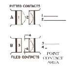
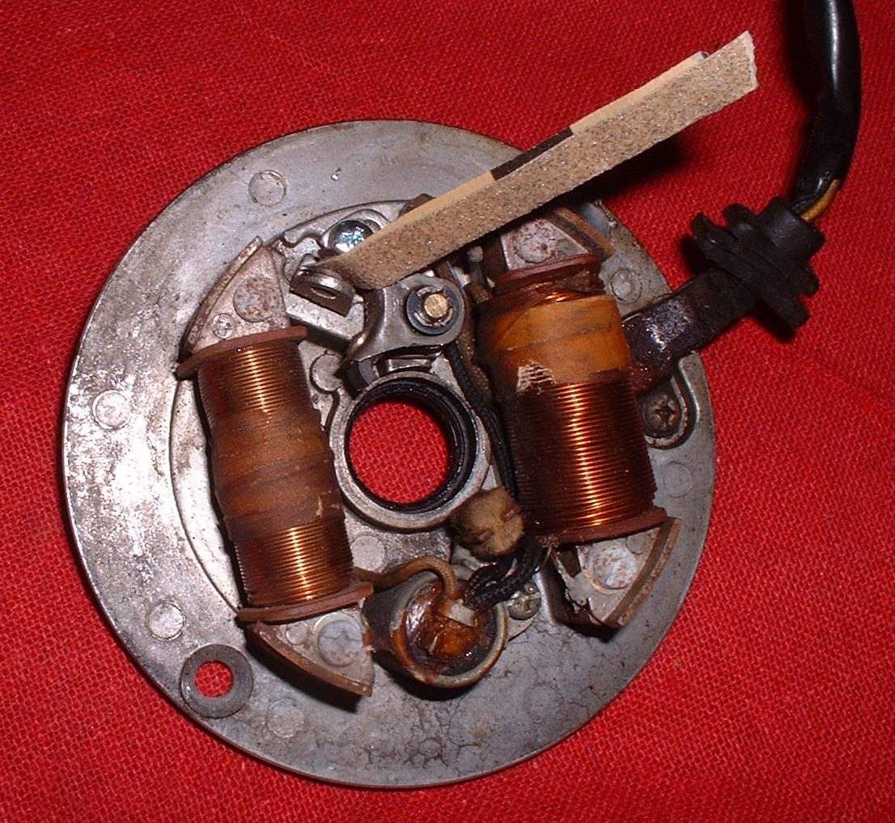
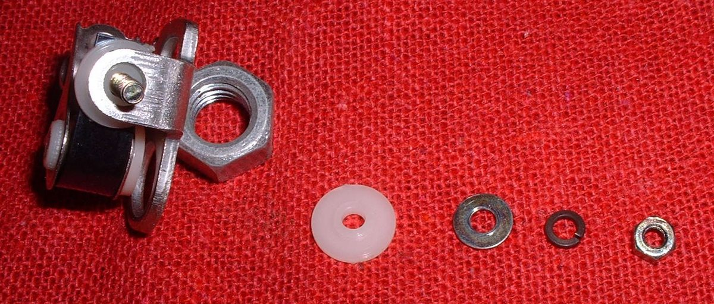
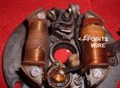

Older bikes without electronic ignition use contact breaker points: a small switch that opens and closes to fire the coil. The points wear on the contact faces and on the rubbing block (heel) that rides the cam. Worn points cause misfires and weak starting, and the timing drifts. Look under the points cover (a small cover with two or three screws, on the cylinder head side or at the end of the crankshaft). If there is no cover and no points, the bike has electronic ignition.
Safety
- Key off. On a battery-and-coil bike, disconnect the battery negative (-).
- Keep petrol away. Acetone and contact cleaner burn.
- Keep oil off the points. Any oil on the faces stops the spark.
You need
- A new points set for your exact model.
- Points grease for the cam and heel, and the model's lubrication felt.
- Contact cleaner, or acetone, and a clean card strip.
Steps
- Remove the points cover.
- Look at the contact faces. Heavy pits, a built-up peak, or burnt blue faces mean replace. Points that look fine can still be worn on the heel, so when in doubt, replace.
- Note which way the wire runs to the points, before you undo it.
- Remove the points wire screw and the points mounting screw. Keep the small insulating washers and the fibre sleeve: they stop the movable arm from touching earth. These small parts must go back in the same order on the new set.
- Fit the new points. The movable arm, its spring and wire screw must be insulated from the fixed contact. The only contact between the two sides is the points faces.
- Refit the wire in the same position. Fix it so the cam, flywheel and other moving parts cannot rub through it.
- Set the gap: turn the engine until the cam lifts the heel to its highest point. Slide a feeler gauge in. Set the gap to the value in your bike's manual, then tighten the screw and check the gap again, because tightening often changes it.
- Clean the faces: dip a card strip in acetone, pull it between the faces, then dry them the same way. Check no paper is left in the gap.
- Put a thin smear of points grease on the cam and heel. Put 1 drop of oil into a dry felt first, so the felt does not pull the grease off the cam.
- Set the timing: Set points gap and ignition timing.
- Refit the cover. Start the engine and check that it runs smoothly.
Check your work
- The gap is within the manual's range at full lift.
- The faces are clean and dry.
- The engine starts and idles without missing.
If it did not fix the problem
- Still no spark: Test the condenser and Test the ignition coil and plug cap.
- Faces burn quickly: the condenser may be the wrong size or faulty.
- Timing off: Check the ignition timing.